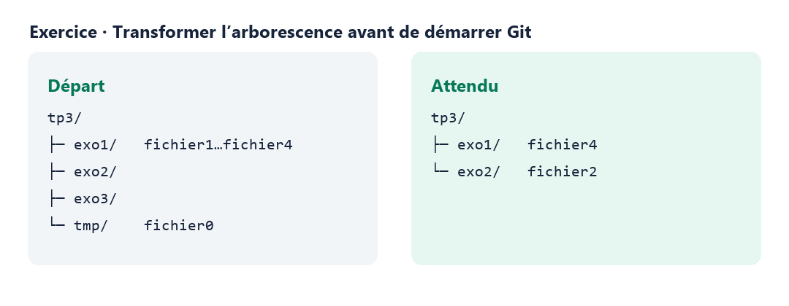

Comprendre le cours
1. Se repérer et assembler une commande
Le shell interprète une commande, ses options et ses arguments. pwd affiche l’endroit depuis lequel un chemin relatif est interprété. cd .. remonte au répertoire parent. Un chemin absolu commence à la racine /. Protège les noms contenant des espaces par des guillemets.
type commande indique notamment si le nom désigne une commande intégrée au shell. help documente les commandes intégrées de Bash, tandis que man ouvre les pages de manuel. ls -la inclut les entrées cachées et affiche les propriétés. Entre guillemets, "*.txt" est transmis tel quel. Sans guillemets, le shell peut le remplacer par les noms correspondants.
2. Créer, déplacer et vérifier les fichiers
mkdir crée un répertoire, touch crée un fichier vide s’il n’existe pas, cp copie et mv déplace ou renomme. Dans mv source destination, si la destination est un dossier existant, le fichier entre dans ce dossier avec son nom actuel. Si la destination désigne un fichier existant, il peut être remplacé. Vérifie le résultat avec ls, tree ou cat.

3. Lire les permissions et démarrer un processus
Lis rwx pour le propriétaire, le groupe et les autres. Sur un fichier, r lit, w écrit et x exécute. Sur un dossier, x autorise la traversée. chmod g=rx document fixe les droits du groupe sans changer les autres catégories. Le umask enlève des droits à la création.
ps montre des processus, selon les options choisies. Avec &, le shell démarre une commande en arrière-plan. $! donne son PID et wait attend sa terminaison. Les variables du shell deviennent disponibles pour les programmes lancés lorsque tu les exportes.
4. Fabriquer un résultat avec des commandes de texte
L’entrée standard reçoit les données, la sortie standard reçoit le résultat et la sortie d’erreur reçoit les diagnostics. > remplace un fichier de sortie, >> lui ajoute du contenu et | transmet la sortie normale à la commande suivante.
head et tail sélectionnent le début ou la fin. grep filtre, cut choisit des colonnes et sort ordonne. uniq travaille sur les lignes adjacentes. Pour compter toutes les répétitions d’un même texte, trie avant uniq -c. find explore des chemins selon des critères de nom, type ou permissions.
Pourquoi trier avant de compter les répétitions ?
Imagine un journal de trois lignes : INFO, ERREUR, INFO. La commande uniq -c compare chaque ligne à la précédente. Les deux lignes INFO sont séparées, donc la commande affiche trois groupes de taille 1.
Avec sort journal.txt | uniq -c, le tri rapproche les valeurs identiques et INFO forme un groupe de taille 2. Ce résultat répond à une question de fréquence. Conserve l’original si tu dois aussi retrouver la chronologie.
Du cours aux TD et TP
Questions TD & TP
TP3, ex. 1 · Construire puis transformer l’arborescence
Énoncé. Créer le répertoire de TP et les fichiers indiqués. À la fin, exo1/fichier4 contient « Hello World! » et exo2/fichier2 est vide. Les autres objets de l’exercice ont été retirés.
- Crée un dossier de travail dédié et place-toi dedans. Fais
mkdir exo1 exo2 exo3 tmppuistouch exo1/fichier{1,2,3,4} tmp/fichier0. La notation avec accolades est développée par Bash. - Déplace
exo1/fichier2dansexo2/. Renommeexo1/fichier1enexo1/fichier0. Écris la ligne de texte avecprintf '%s\n' 'Hello World!' > exo1/fichier3, puis renomme le fichier versexo1/fichier4comme demandé. - Dans ce dossier d’exercice, retire
exo1/fichier0ettmp/fichier0, puis enlève les dossiers videsexo3ettmpavecrmdir. Vérifie l’arborescence et lisexo1/fichier4aveccat.
Application du mémo · Compter les répétitions d’un journal
Exemple d’application. Compter le nombre d’occurrences de chaque ligne contenant ERREUR.
- Essaie
grep 'ERREUR' journal.txt | sort | uniq -c. Lis les résultats à chaque étape pour vérifier quelle commande enlève ou réordonne les lignes. - Insère deux mêmes lignes d’erreur séparées par une autre. Sans tri, elles ne sont pas voisines et le compteur peut les traiter à part. Après tri, elles se retrouvent ensemble.
- Pour garder un rapport, redirige la sortie vers un fichier distinct. Vérifie avec
ls -lque les droits du fichier correspondent au partage prévu.
Application des notes · Afficher le PID puis attendre la fin
Exemple d’application. Démarrer sleep en arrière-plan, repérer son PID et attendre sa sortie.
- Lance
sleep 10 &puis sauvegardepid=$!. Vérifie avecps -p "$pid"pendant ces dix secondes. - Exécute
wait "$pid"et lis immédiatementecho "$?". Une fin ordinaire du test donne 0. - Refais
sleep 10au premier plan. Tu ne récupères la main qu’après sa fin. Cette différence permet de vérifier le rôle de l’arrière-plan.